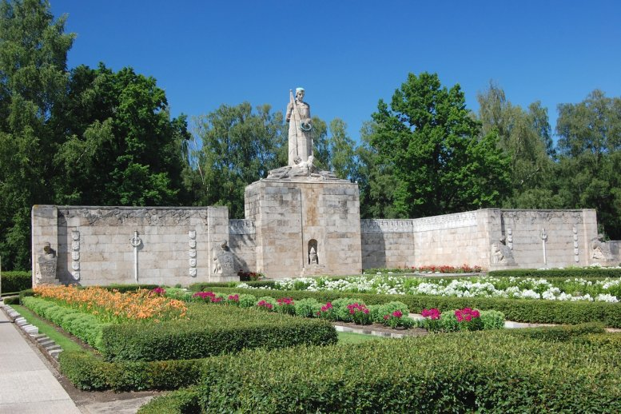
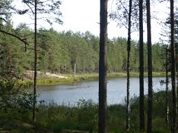
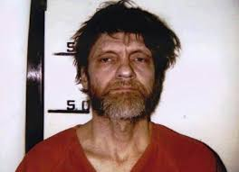

Brāļu kapi ir kopējs apmēram vienā laikā mirušu cilvēku apbedījums, pārsvarā kara darbības vai masu represiju rezultātā. Latvijā ar šo terminu pārsvarā saprot 1. un 2. Pasaules karā kritušo karavīru apbedījuma vietas, kas izceltas ar memoriāliem pieminekļiem.
Buļļezers (arī Buļļu ezers) ir beznoteces ezers Garkalnes novadā. Izvietojies starpkāpu ieplakā novada austrumos. Krasti lēzeni, slīpi, vietām stāvi, dibens smilšains, dūņains. Mīt sudrabkarūsa, mitinās bebri. Ezera krastā peldvieta, atpūtas vieta.
Teodors Džons Kačinskis (Theodore John Kaczynski, dzimis 1942. gada 22. maijā), pazīstams kā Unabombers, ir poļu izcelsmes amerikāņu zinātnieks, matemātiķis, filosofs, terorists, kurš laikā no 1978. līdz 1995. gadam terorizēja ASV valsts institūcijas ar vēstuļbumbām. Dzimis 1943. gada 22. maijā Čikāgā, Ilionoisas pavalstī ASV. Spīdoši absolvējis Hārvarda Universitāti, saņēmis zinātņu doktora grādu matemātikas filosofijā Mičiganas Universitātē. 25 gadu vecumā tika uzaicināts par vecāko lektoru Kalifornijas universitātē Bērklijā. 1971. gadā, vīlies modernās sabiedrības ētiskajos, morāles un sadzīves pamatprincipos, pameta to un apmetās vientulībā kalnu mājiņā Linkolnā (Montānas pavalsts). Nespējot legāli apturēt dabas postīšanu, ceļot šoseju netālu no dzīvesvietas, nosliecās par labu domai, ka vienīgais, kā valdību var piespiest rēķināties ar pilsoņiem, ir pret varu un sabiedrības sistēmu vērsts terorisms.
